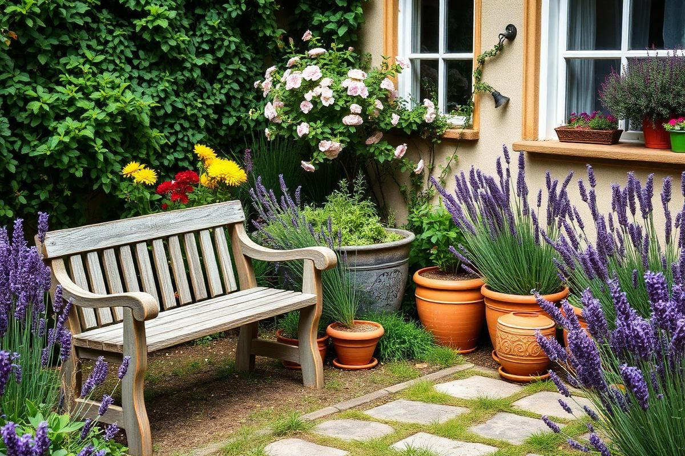
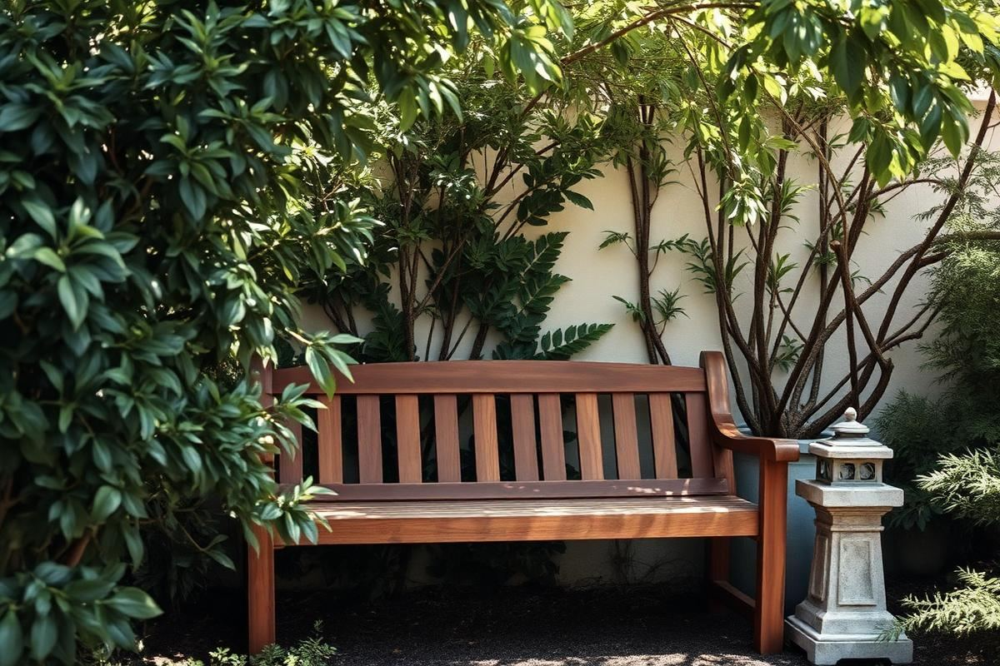
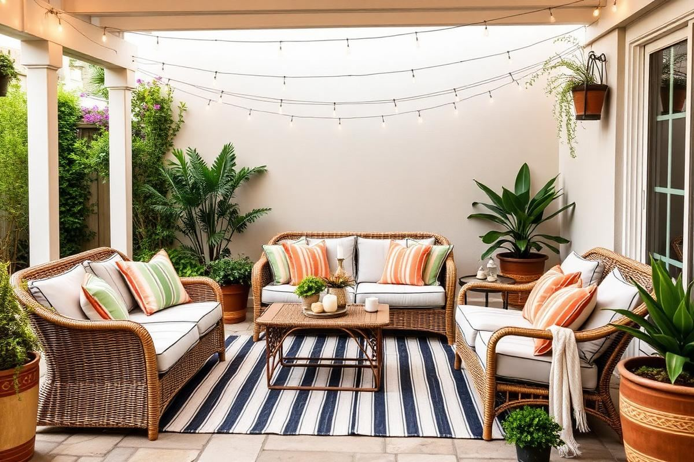
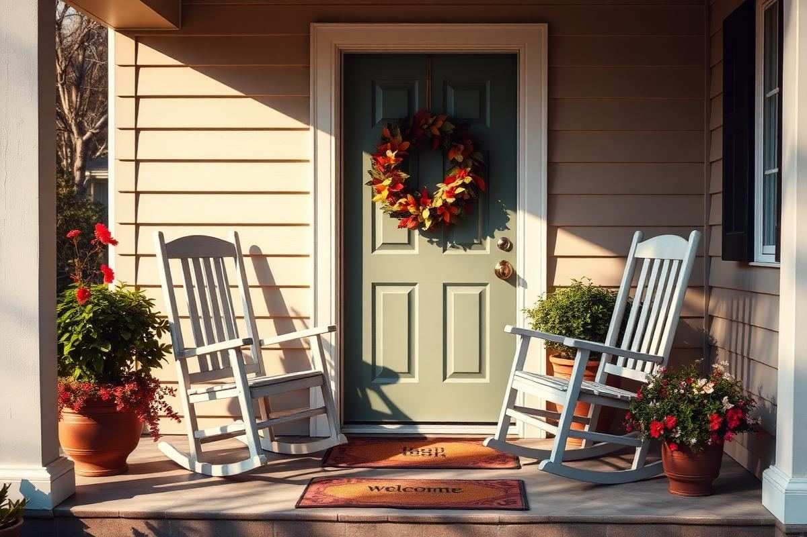
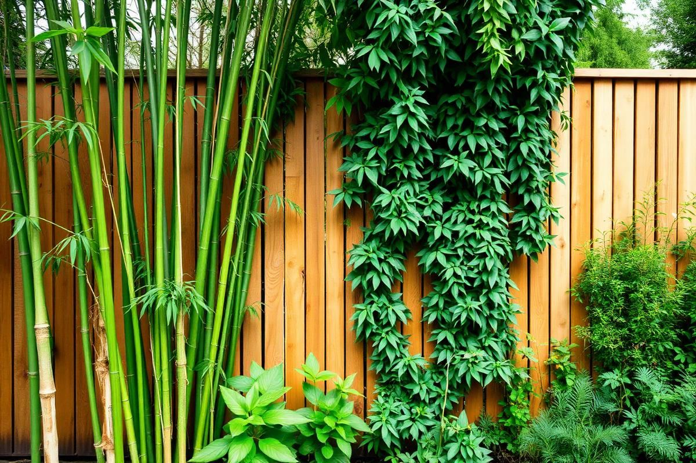

Garden Decor Ideas That Age Beautifully

Garden Decor Ideas That Age Beautifully is one of those topics where a little planning goes a long way. In this guide I walk through the process we use in real homes — not just what looks good in a photo, but what actually holds up over time.
Start here
Before you buy or move anything, measure the space and note how you actually use it. The best-looking room is one that matches how you live, so start with the routines: where you sit, where you drop keys, where the light falls in the afternoon.
The essentials
Focus on the pieces that do the most work. Get those right and the rest of the room comes together with much less effort. Aim for materials that patina rather than degrade, and colors you will still like in five years.
- Choose one clear focal point per room.
- Pick materials that improve with age.
- Layer textures instead of adding more colors.
- Leave visual breathing room — negative space is a design element.
Common mistakes
The mistakes we see most often are matching everything too tightly, over-scaling accessories, and skipping proper lighting. Fix those three and most rooms improve overnight.

Elevating Functional Elements
Every garden has functional necessities, from irrigation systems to storage. The trick is to design these elements to blend seamlessly or even become focal points themselves. Instead of a standard plastic rain barrel, consider a terracotta amphora with a brass spigot, elevated on a custom-built stone plinth. This not only gathers rainwater but acts as a sculptural element. For hose storage, bypass the generic plastic reel. Invest in a cast-iron wall-mounted holder shaped like a botanical motif, or commission a local artisan to create a large ceramic pot (minimum 24-inch diameter, 30 inches high) with a subtle side opening for the hose, acting as a planter for trailing edibles like nasturtiums when not in use. Even compost bins can be elevated; choose cedar or redwood constructed in a tripartite system for easy turning, then screen it with trellises supporting climbing roses or jasmine. The goal is to avoid single-purpose items that detract from the aesthetic; every piece should ideally serve at least two functions, whether practical or visual.
For example, integrate seating with planters. A stone bench with hollowed-out ends can house succulents, or a custom-built wooden bench (using reclaimed teak, for instance) can have integrated raised beds for herbs. This maximises space and ensures every inch contributes to the garden's beauty. Even a simple bird bath can be transformed; opt for natural stone, ensuring the basin is not too deep (1-2 inches for small birds) with a rough texture for grip, and surround it with low-lying, bird-friendly native plants like coneflowers and black-eyed Susans. The right design choice for these functional items can significantly elevate the overall feel of your garden, making it look intentionally curated rather than haphazardly equipped.
The Power of Patina: Embracing Age
True garden beauty often improves with age, and embracing patina is key to this. Certain materials are inherently designed to weather gracefully, developing rich, complex surfaces over time. This isn't about letting things crumble; it's about selecting materials that gain character, rather than degrade. Consider Corten steel for planters, edging, or water features. Its controlled rusting process forms a stable, protective layer that transitions from a bright orange to a deep, earthy brown-red. A 3-foot long, 1-foot wide Corten steel planter might cost around $150-$250, but it will only look better with each passing season. Another prime example is natural stone – bluestone, granite, or flagstone. Patios laid with these materials develop moss and lichen in shaded areas, and their surfaces soften and mellow, integrating more deeply with the surrounding landscape. Avoid highly polished or sealed stones for pathways, as they can become slippery and lose their natural charm.
Terracotta is another excellent choice. Unsealed pots, urns, and statuary will develop a beautiful white efflorescence and darkened, mottled surfaces from moisture and minerals, telling a story of seasons past. A large, unglazed terracotta olive jar (approximately 30 inches tall) can cost $80-$150 and will become a magnificent focal point over time. Similarly, aged copper develops a stunning verdigris, transforming from bright orange to a muted blue-green. Copper rain chains, small sculptures, or decorative finials (a copper finial for a gazebo might run $200-$500) will gain incredible depth. Even untreated hardwoods like teak or ipe, when left to weather, will silver beautifully, a far more elegant look than varnished alternatives that peel and chip. This embrace of natural aging is what truly distinguishes a garden that simply exists from one that thrives and evolves.
Strategic Lighting for Extended Enjoyment
Garden lighting isn't merely about visibility; it's about creating ambiance, highlighting features, and extending the usability of your outdoor space well past sunset. The biggest mistake is over-lighting, which flattens the landscape. Think in layers: ambient, task, and accent lighting. For ambient, low-voltage LED path lights (e.g., Kichler's 12V LED Path Light, around $80-120 per unit) ensure safe passage without glare. Place them judiciously, spaced 6-8 feet apart, staggered rather than in a rigid line, to create a subtle glow. For task lighting, such as around a seating area or outdoor kitchen, consider string lights (commercial-grade LED string lights, 48ft, often $50-$100) draped overhead or downlights installed under pergolas, rather than harsh floodlights. These create a warm, inviting pool of light for specific activities. Lastly, accent lighting is where you define your garden's nocturnal personality.
- Uplight a specimen tree: Use one or two narrow-beam spotlights (e.g., Cast Lighting's bronze bullet lights, $150-$250) at the base of a beautiful tree, directing them upwards into the canopy. This creates dramatic shadows and highlights texture.
- Subtle planter illumination: Small recessed puck lights (e.g., VOLT Lighting's LED mini brass lights, $30-$50) embedded in the lip of large planters can create a soft, upward wash on foliage.
- Water feature enhancement: Submersible LED lights (IP68 rated, around $40-$80 for a small unit) can transform a fountain or pond, making the water sparkle and glow from within. Ensure they are designed for continuous submersion.
- Architectural highlights: Position spotlights to graze a stone wall or highlight a garden sculpture, emphasizing its texture and form. Avoid direct frontal lighting, which flattens features. Aim for a 30-degree angle from the object.
Always choose warm white LEDs (2700K-3000K) for a natural, inviting glow, avoiding cold, blue-toned light. Plan your lighting layout on paper first, considering what you want to see and what you want gently illuminated.
Curated Container Storytelling
Container gardening isn't just for small spaces; it's an opportunity to introduce mobile focal points, seasonal splashes of color, and to tell a dynamic story within your garden. The key is moving beyond mismatched plastic pots. Invest in quality materials that age well: terracotta, glazed ceramic, cast concrete, or even salvaged stone troughs. For terracotta, a large, unglazed Italian impruneta pot (24-inch diameter, 20-inch height) can cost $180-$300 but will develop a magnificent patina. For glazed ceramic, opt for frost-resistant, high-fired options in classic blues, greens, or earthy tones; expect to pay $70-$150 for a 16-inch diameter pot. Grouping containers of varying heights and widths, but unified by material or color palette, creates a more sophisticated display. For instance, three terracotta pots — a tall olive jar, a medium-sized bowl planter, and a short, wide trough — planted with complementary textures (a dwarf olive tree, trailing rosemary, and thyme, respectively) create a cohesive narrative.
Think about the 'thriller, filler, spiller' principle for each container. A 'thriller' is your focal plant (e.g., a tall ornamental grass like 'Fireworks' Pennisetum), a 'filler' provides body (e.g., coleus or verbena), and a 'spiller' trails over the edge (e.g., sweet potato vine or calibrachoa). This ensures visual interest at multiple levels. Don't be afraid to incorporate edible plants into ornamental containers; a large galvanized stock tank (2'x4', about $80-$120) can become a stunning herb garden or a display for vibrant Swiss chard and curly kale, adding both beauty and utility. Repositioning containers seasonally also allows you to refresh views, bring plants closer to a patio for enjoyment, or move them for differing light requirements, making your garden feel constantly renewed and intentionally designed.
The Art of the Garden Nook
Every garden, regardless of size, benefits from a designated 'nook' – a small, intimate space for quiet contemplation or intimate conversation. This isn't just about adding a bench; it's about creating a defined, inviting sanctuary. Choose a spot that feels somewhat secluded, perhaps at the curve of a pathway, beneath a mature tree, or against a section of wall. The boundary can be soft, defined by tall grasses, clumping bamboo (use a rhizome barrier, 24-30 inches deep, for running varieties), or a low hedge of boxwood or lavender. For seating, avoid flimsy plastic furniture. A robust, weathered teak bench (a 4-foot bench can range from $300-$600) or a pair of wrought-iron bistro chairs with a small, round mosaic table (around $150-$300) are excellent choices that age beautifully and offer lasting comfort. For a more rustic feel, consider a large, flat-topped boulder or a section of an old tree stump as a natural seat.
Enhance the sensory experience of your nook. Plant fragrant elements nearby: a climbing rose on an arbor, a patch of jasmine, or a collection of scented geraniums in pots. Incorporate a small water feature – a simple bubbling urn (a pre-fabricated bubbling rock kit is about $200-$400) or a bird bath – for soothing sound. Soften the ground with fine gravel (e.g., pea gravel, around $50 per ton, covering about 100 sq ft at 2 inches deep) or a small patch of moss. Add a personal touch: a hand-carved stone lantern, a small piece of outdoor art, or a collection of interesting pebbles. The goal is to make this space feel distinct, offering a sense of escape within your larger garden. It should be a place where you're drawn to sit, relax, and truly absorb the beauty of your surroundings, making the garden feel more personal and deeply cherished over time.
Key takeaways
- Match the room to how you actually live.
- Anchor with one main piece and clear lighting.
- Layer textures, not colors.
- Leave breathing room around every object.
Frequently asked questions
Where should I start?
Start with the largest piece and the light. Everything else — art, textiles, small objects — is easier to place once those two anchors are set.
What is a realistic budget?
Prioritize the pieces you touch every day. Spend more on those and less on decorative items, which are easy to swap over time.
How long should this last?
A well-chosen main piece should last 10–15 years. Refreshes come through textiles, art, and accessories, not full replacements.

Sophia Bennett is a certified interior stylist and the senior editor at Styleire. She has spent more than eight years helping homeowners and renters create warm, functional interiors, with hands-on experience across small city apartments and family homes. Her work has been informed by close collaboration with independent designers, craftspeople, and product testers.
View full profile →Related reading

Outdoor Patio Styling Guide: Furniture, Rugs, and Light
A styled patio uses the same rules as a good living room — with materials that survive the weather.

Front Porch Decorating Ideas for Every Season
Front Porch Decorating Ideas for Every Season — a clear, editor-tested guide covering the essentials without the filler.

Backyard Privacy Ideas That Actually Look Nice
Backyard Privacy Ideas That Actually Look Nice — a clear, editor-tested guide covering the essentials without the filler.